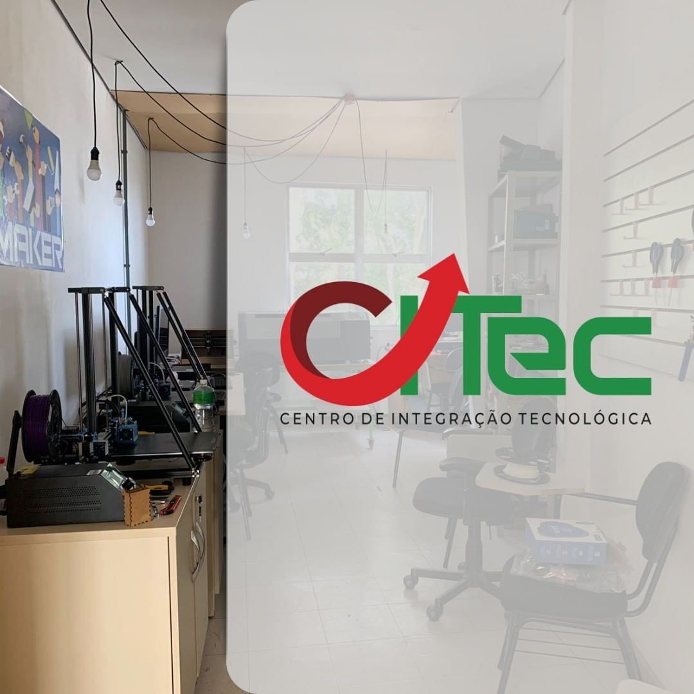

Início
O Centro de Integração Tecnológica (CITec) compõe o Habitat de Inovação do IFRS campus Rio Grande, tendo como o propósito ofertar um espaço de intersecção entre ensino, pesquisa e extensão, atendendo as comunidades interna e externa do campus na capacitação e execução de desenvolvimento de soluções para produtos e serviços, tendo como base conceitos de Cultura Maker, Ciência Cidadã e Sustentabilidade. Centrado nas experiências no tríade ensino-pesquisa-extensão, o projeto do CITec está estruturado em espaços flexíveis e colaborativos pensados para suportar diferentes iniciativas, voltado para o desenvolvimento e materialização de ideias, onde o indivíduo atua de modo criativo e autônomo, protagonista em todas as etapas, com o suporte da equipe no planejamento, criação, projeto, manufatura e análise da solução, concluindo o ciclo de desenvolvimento do produto.
Neste espaço estão as máquinas de fabricação digitais e tradicionais, computadores para desenvolvimento e espaço para armazenamento dos projetos. Idealizado em 2019 como um Espaço Maker para atividades de ensino interdisciplinares, propiciando aos discentes atuarem como protagonistas na idealização, operação e validação de experimentos, tem-se em 2022 a consolidação do projeto do Habitat de Inovação Tecnológica. No momento, o CITec está aberto e disponível para todos os alunos e professores dos cursos integrados, subsequentes e superiores do IFRS. Contamos hoje com cinco impressoras 3D, máquina de corte a laser, CNC e eletrônicos como Arduíno e diversos tipos de sensores. Venha nos visitar! Agende seu horário pelo e-mail: citec@riogrande.ifrs.edu.br. Saiba mais em agenda.
Serviços e ações desenvolvidos
- Projeto TecnoMaker 4.0: Oficinas de iniciação tecnológica, abordando pensamento computacional, robótica educacional e fabricação digital, constituindo público-alvo estudantes da rede pública municipal de Rio Grande/RS e da rede estadual;
- Projeto Cultura Maker: Oficinas de 4 ou 8 horas de duração, oferecidas semanalmente. O conjunto de todas oficinas formam uma trilha de aprendizagem tecnológica desenvolvendo desde metodologias de como abordar um problema real, elaboração de esboço de soluções, modelagem 3D para a confecção de protótipos virtuais e de fabricação digital para materialização de soluções através de impressão 3D, corte a laser e router CNC.
- Oficinas de introdução a eletrônica e arduino.
- Open Day: um dia na semana onde, através de agendamento prévio, os makers têm acesso livre para utilização de toda infraestrutura e recursos disponíveis, orientados por monitores do laboratório.
- Execução de projetos de cunho multidisciplinar, é factível a emergência de inovações e com elas o avanço em termos de desenvolvimento científico e tecnológico na instituição: desenvolvimento de oficinas de capacitação ofertada nos projetos a serem desenvolvidos pelas equipes multidisciplinares do CITec, ou dos laboratórios irmãos no campus.
Cultura Maker
Baseando-se na ideia de que as pessoas devem ser capazes da fabricar, construir, reparar e alterar objetos dos mais variados tipos e com diversas funções, o Cultura Maker é um projeto ensino aberto para a comunidade acadêmica do IFRS Campus Rio Grande. É uma ótima oportunidade para desenvolver a criatividade através dos minicursos de modelagem, impressão 3D, corte à laser e Arduíno. As oficinas são abertas pra TODA a comunidade acadêmica do IFRS - Campus Rio Grande, alunos do integrado, subsequente, superior e também para os professores do campus.